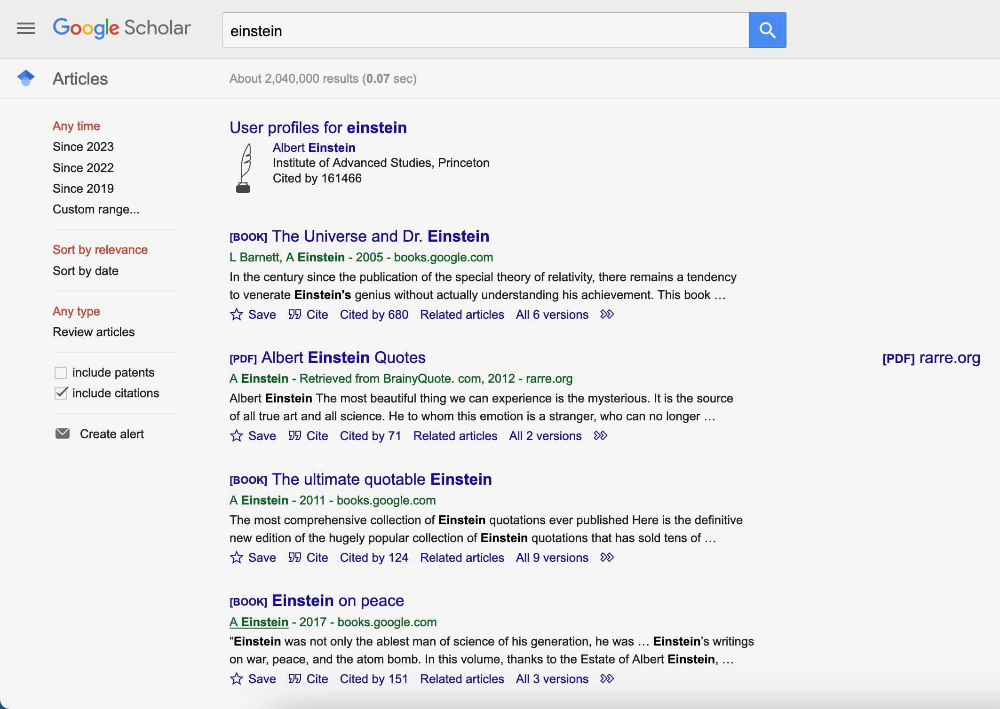
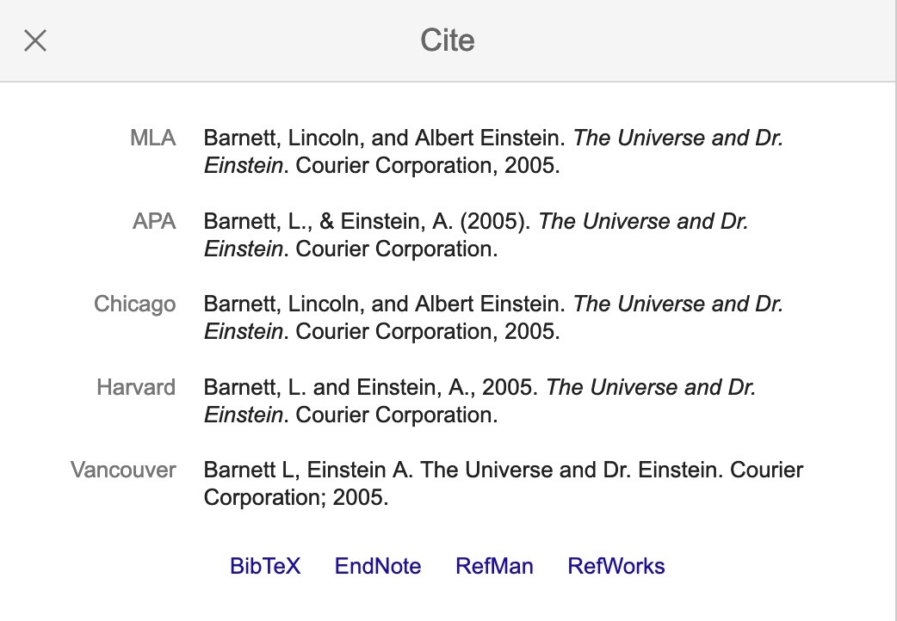
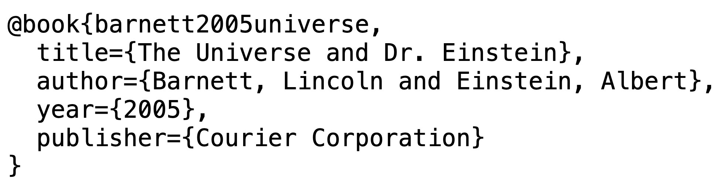

Using Quarto’s Reference Manager with Google Scholar
For your homework and your project, we ask you to integrate references into your Quarto documents, a process which invovles the following steps:
- Obtain references to scholarly papers/books and combine information about these references into a
references.bibfile, and - Include citations to these references within your Quarto document.
This walkthrough will show you the details of each step.
First things first, there are many ways to obtain references, and many formats that the references can come in, but the format used by Quarto is called BibTeX. Long story short, there are two ways to obtain BibTeX-style reference info for a given paper or book. The first way (using Google Scholar) is simple, and will let you immediately generate a references.bib file. The second way (using a reference manager like Zotero or Mendeley) takes a bit longer to get set up, but will save you SO much time in the long run. In this writeup we’ll use the Google Scholar approach, but I highly recommend reading the writeup on using Zotero to learn the Zotero/Mendeley approach as well.
Step 1: Obtaining References and Creating a .bib File
Step 1.1: Obtaining Your First Reference
An easy way to quickly obtain references in a format where you can immediately cite them in your Quarto documents is to use Google Scholar. If you open that link, and search for a topic you’re interested in, it should show you a big list of results that looks like:

Now, if you choose one of these references and click the “Cite” button at the bottom of the result, it should display a popup (modal) dialog that looks like the following:

Now, if you click on the “BibTeX” link, the first link at the bottom of this popup (modal) window, it should immediately open a new tab containing a plaintext version of the BibTeX data for this reference, like:

If you don’t see this plaintext data, that probably means that your browser is set to download rather than just display .bib files, so just look in your Downloads folder for the downloaded file (it might have some weird name, and it might not have a .bib extension, but that’s ok, it will still open in a text editor like VSCode), open it in a text editor, and it should contain exactly the above data.
However you end up with this plaintext reference data, copy and paste it into a new text file (in VSCode, you can create a new plaintext file using Cmd+N), and save this file as references.bib.
That’s it! You now have a fully-fledged references.bib file, that looks as follows:
references.bib
@book{barnett2005universe,
title={The Universe and Dr. Einstein},
author={Barnett, Lincoln and Einstein, Albert},
year={2005},
publisher={Courier Corporation}
}Step 1.2: Adding Additional References
Our references.bib file only contains one reference at the moment, but we can quickly add more by repeating the above process: find another reference you’d like to cite, click the “Cite” link underneath that reference, click the “BibTeX” link at the bottom of the “Cite” dialog box, and copy the resulting (plaintext) data into your references.bib file. Make sure to separate each reference within the .bib file by at least one space, so that for example it may look like the following:
references.bib
@book{barnett2005universe,
title={The Universe and Dr. Einstein},
author={Barnett, Lincoln and Einstein, Albert},
year={2005},
publisher={Courier Corporation}
}
@book{einstein2017einstein,
title={Einstein on peace},
author={Einstein, Albert},
year={2017},
publisher={Pickle Partners Publishing}
}Step 2: Citing the references.bib File From Within Quarto
Now that you’ve created your references.bib file, and filled it with two references, we need to carry out two final steps if we want to cite references from this file when creating content in a .qmd file.
Step 2.1: Telling Quarto About Your .bib File
Let’s say you are modifying a file called introduction.qmd, and in this file you’d like to cite one or more of the references contained in references.bib. Hopefully it’s becoming a bit of a habit now, that if we want to give Quarto some information to use when it goes to render the .qmd, we need to include this information within the metadata block at the top of the page. So, if you are editing introduction.qmd, and its metadata block currently looks like
---
title: "Introduction"
author: "DSAN 5000 Student"
---You’ll need to add an additional line to this metadata block telling Quarto where it can find the .bib file—that is, you’ll need to give it a relative path telling it how to get from the introduction.qmd file to the references.bib file. The syntax for this metadata entry looks like bibliography: <path-to-file>. So, if our references.bib file happened to be in the same exact folder as the introduction.qmd file, we could simply add
bibliography: references.bibto the metadata block. Or, if you placed the references.bib file in a subdirectory of the directory containing introduction.qmd (say, a subdirectory called assets), you would need to tell Quarto to look for the .bib file within this subdirectory:
bibliography: assets/references.bibIf the .bib file instead was placed one level above the location of the introduction.qmd file in your directory tree, then the following would tell Quarto to look there:
bibliography: ../references.bibOnce you have pointed Quarto to the location of your references.bib file, all that’s left is to actually cite one or more of the references within the content of introduction.qmd.
Step 2.2: Citing references.bib Entries Within a Quarto Document
For this final step, recall what the contents of the .bib file you created look like:
references.bib
@book{barnett2005universe,
title={The Universe and Dr. Einstein},
author={Barnett, Lincoln and Einstein, Albert},
year={2005},
publisher={Courier Corporation}
}
@book{einstein2017einstein,
title={Einstein on peace},
author={Einstein, Albert},
year={2017},
publisher={Pickle Partners Publishing}
}From this structure, we can see that @book tells Quarto that this entry is a book (this could, alternatively, be @article or @conference-proceedings, for example), and then after the line containing this entry type information we see key-value pairs containing the relevant information: the title, author, year and publisher of each book.
The key thing to notice in our case, however, is the “code” which is given immediately after the entry type: barnett2005universe and einstein2017einstein. These are called citation keys, and they are what we use to refer to entries in our .bib file from within our .qmd documents!
So, for example, if we started writing the content of our introduction.qmd page before we created the references.bib file, it may have looked like:
introduction.qmd Before Setting Up References
In this project we are studying the life and work of Albert Einstein. Barnett (2005) is a key work about Einstein's scientific contributions, while Einstein (2017) contains a collection of Einstein's writings on peace in the years before and after World War II.The issue is: If we kept it like this and started writing dozens and dozens of paragraphs, but our boss came along and said “Hey! We need you to switch to a different citation format!”, you would have to go back through your document and manually update each in-text citation to match the new format, plus you would need to (a) manually create a “References” section at the end, and (b) manually update it if your boss requests a change in how the end-of-article references should be formatted.
So, instead, we use the citation keys mentioned above (which should be present for each entry in your references.bib file) to indicate to Quarto when we’d like to cite something, and Quarto will handle the rest! If your boss comes along and requests a change, you no longer need to manually update each citation/reference: Quarto allows you to specify formatting as a set of global options, which it then automatically applies to each citation and reference. For example, to utilize this system, we can now update our introduction.qmd file to look as follows:
introduction.qmd After Setting Up References
In this project we are studying the life and work of Albert Einstein. @barnett2005universe is a key work about Einstein's scientific contributions, while @einstein2017einstein contains a collection of Einstein's writings on peace in the years before and after World War II.And when Quarto goes to render this introduction.qmd file (for example, after you run quarto render in the root folder containing your website files), it will see these citation keys indicated by the @ symbol followed by the key from the references.bib file, and style the citation by filling in all of the relevant information for this item from references.bib. To see the difference, the following two blocks show the rendered version of this paragraph without and then with Quarto’s reference-management features set up:
introduction.qmd Content Without Citation Keys
In this project we are studying the life and work of Albert Einstein. Barnett and Einstein (2005) is a key work about Einstein’s scientific contributions, while Einstein (2017) contains a collection of Einstein’s writings on peace in the years before and after World War II.
introduction.qmd Content With Citation Keys
Notice how, in the rendered version with citation keys:
- The parenthesized year in each citation is now colored blue, and when you hover your mouse over these years it should show a popup containing more information about the cited book.
- Quarto also auto-generated a “References” section for our article, which you should see at the bottom of this page.